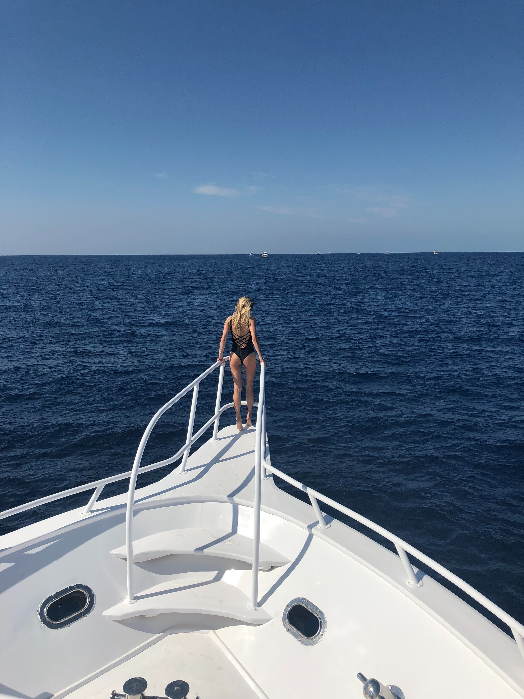
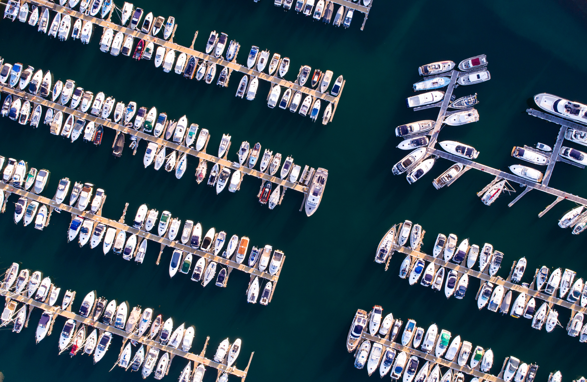
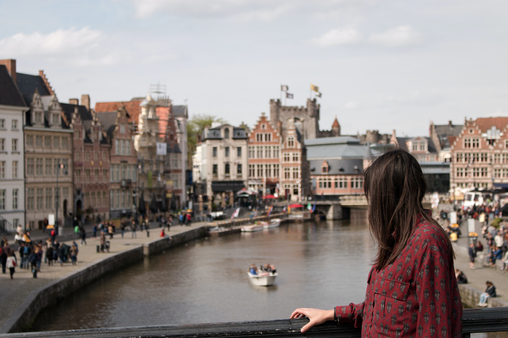
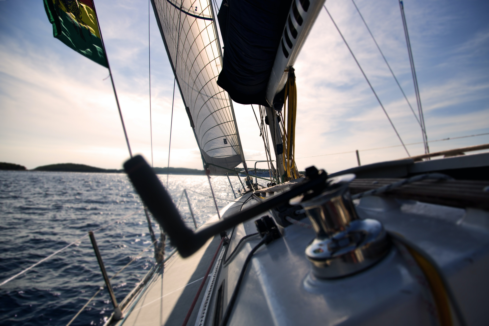
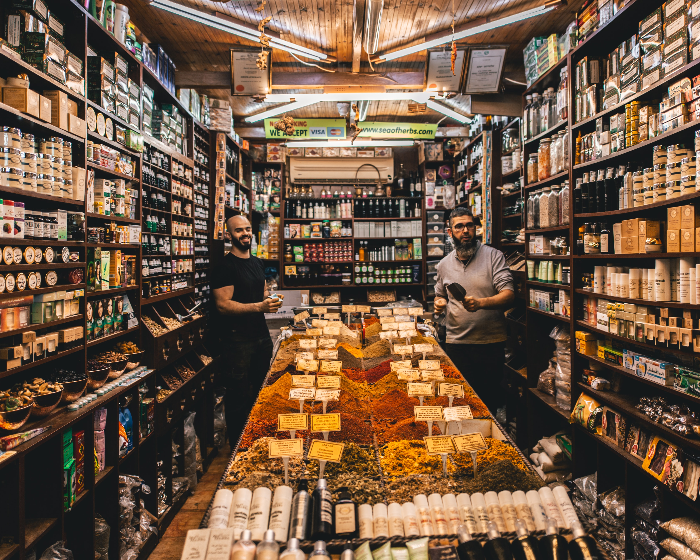
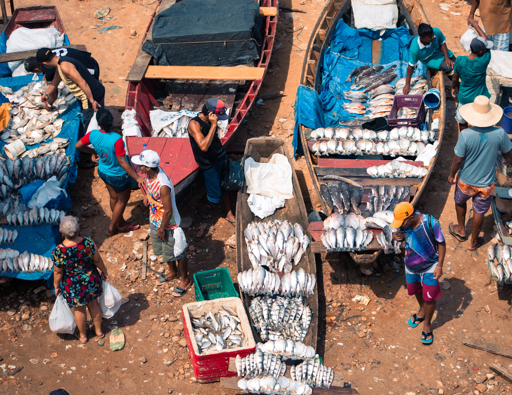
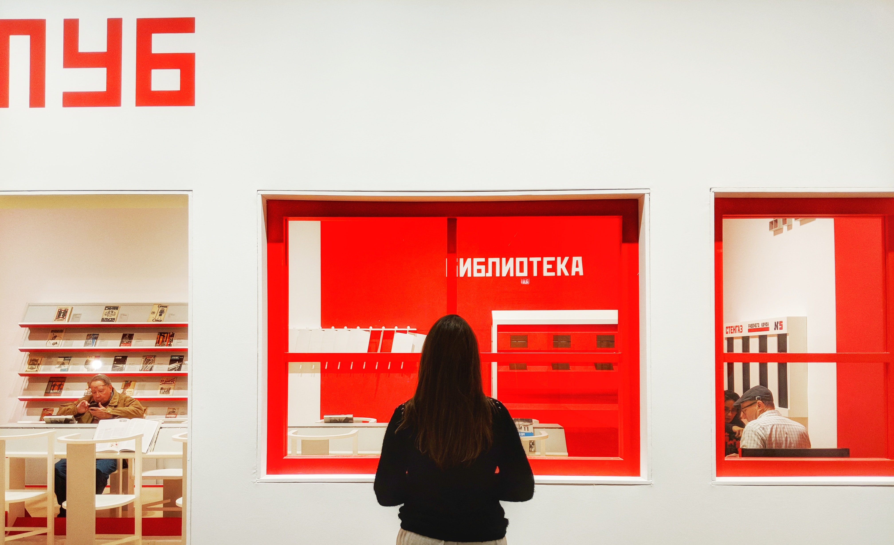
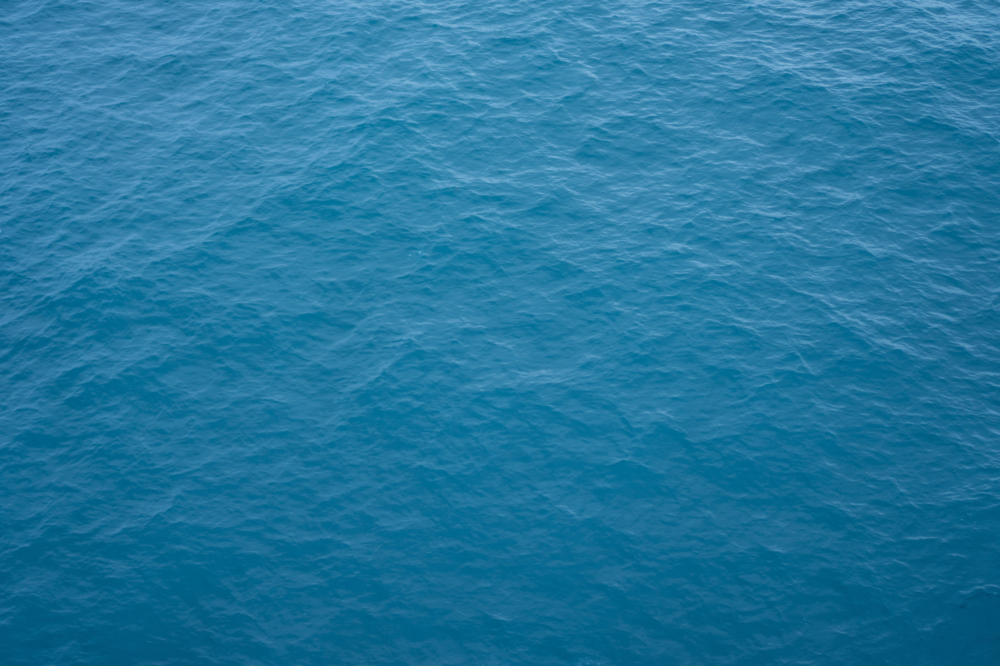

SAILING
COLLECTIVE
JOURNAL
Features
Travels
Photo Essays
Recipes
Hotel Recs
Shop
Bookings and Reservation
Instagram
Facebook
Twitter
Pinterest
Contact
Journeys
STORIES FROM OUR TRAVELS
Going Places
JOURNEY INQUIRIES
FEATURES

PHOTO ESSAYS
Moods of The Gulf of Naples
By Dayyan Armstrong, Photography Stefan Wigand

TRAVELS
A story of Dodecanese Island
By Dayyan Armstrong and Sarah Roland
RECIPES
A textured Braised, beans and fennel
By Amy yi
FEATURES
SHARE
TRAVEL

TRAVEL
The Blue period- Sardinia
By Erik Rasmussen | Photographer William Kanner

TRAVEL
Summers In Maine
By Dayyan Armstrong

TRAVEL
Taverna Azzura, Palermo's streer bar
By Dayyan Armstrong

PHOTO ESSAYS
Thailand - Bangkok is real
By Dayyan Armstrong

TRAVEL
Windy Chien knows knot: A conversation
By Rose bean, cover photo by Vero Kherian
More Travel
TRAVEL
PHOTO ESSAYS
PHOTO ESSAYS
A Look at Croatia
By Dayyan Armstrong

PHOTO ESSAYS
British Virgin Islands - Through the eyes of Oto Gillen
By Oto Gillen
PHOTO ESSAYS
Sirdinia Exposed
By Ashley Camper
PHOTO ESSAYS
Spain - A look at Barcelona
By Dayyan Armstrong
PHOTO ESSAYS
Thailand Voyage through the eyes of Hello America
By Kristen Blanton and Matt Jozwiak
MORE PHOTO ESSAYS


.jpg)